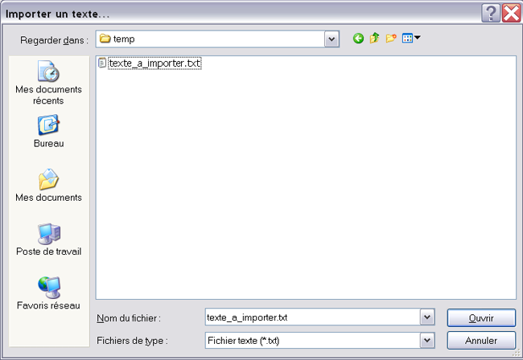
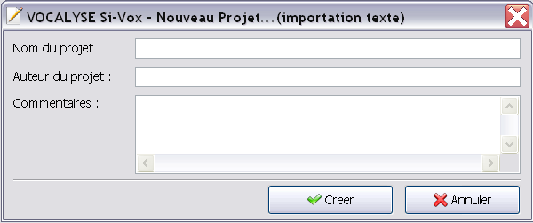

Pour importer un texte (.txt), il faut cliquer sur Fichier > Importer un texte...
Le logicel vous demande alors le fichier texte que vous voulez importer (extension .txt)

En cliquant sur Ouvrir, le logiciel vous demandera les informations concernant le nouveau projet d'importation.

Si vous cliquez sur Annuler, rien ne s'effectuera. Si vous cliquez sur Créer, le logiciel créra un nouveau projet en important le texte sélectionné